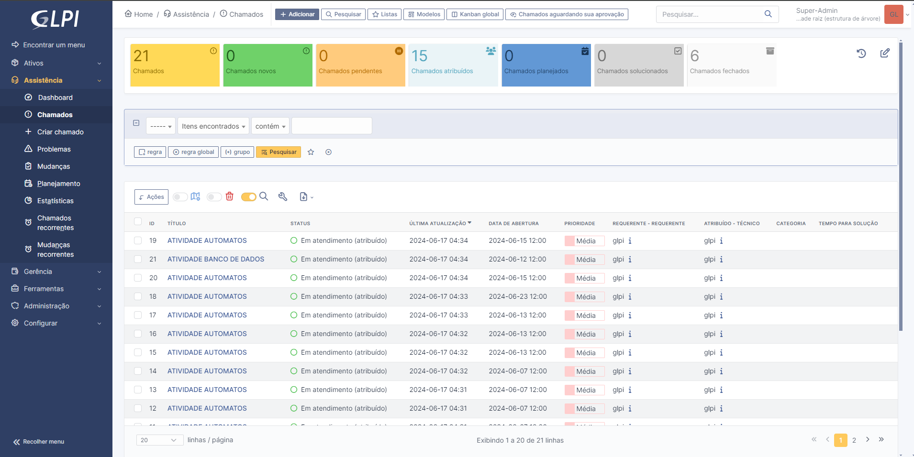
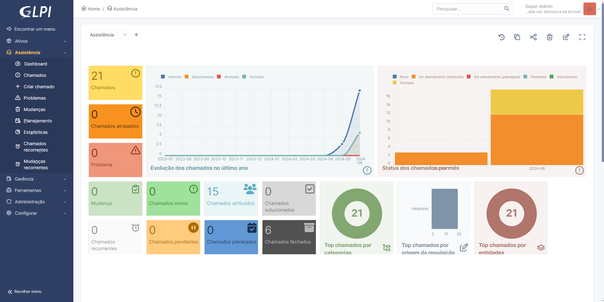
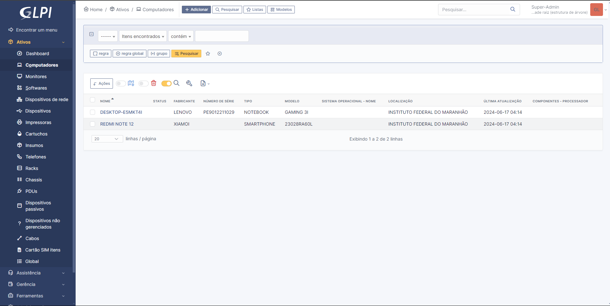
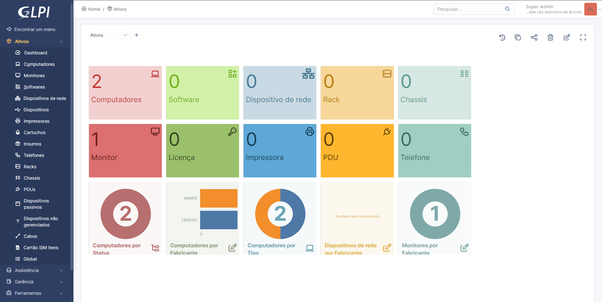

GLPI
Introdução ao GLPI
Instalação do GLPI
Como já vimos, o GLPI é um sistema de gerenciamento de TI. Nele você pode adicionar ativos, chamados, criação de usuários, etc. A seguir, as formas de instalação do GLPI são:
Algumas formas de instalar
Instalação e configuração
Primeiro Passo
Instale o XAMPP.
| Versão: 8.0.30 / PHP 8.0.30
Como o XAMPP instalado, baixe uma pasta do GLPI, a versão mais recente estável GLPI 10.0.15.
Segundo Passo
Extraia a pasta do GLPI. Após extrair a pasta, adicione-a ao XAMPP. Localize a pasta htdocs, bote a pasta que voceê recortou dentro dela, e agora o XAMPP vai conseguir usar as funcionalidades do GLPI.
Terceiro Passo
Garanta a porta certa no XAMPP, caso tenha o MySql instalado antes do XAMPP, provavelmente os dois estarão para a porta 3306, dito isso, mude no XAMPP APACHE E MYSQL, em ACTIONS-CONFIG e troque a porta 3306 para 3307. Do mesmo jeito no bloco de ntoas do my.ini, trocando a porta 3306 para a nova. Faça esse mesmo processo no pasta do Module do Apache, no arquivo php.ini, e troque tudo para a porta 3307.
Quarto Passo
Agora temos tudo que precisamos para utilizar o GLPI. Primeiro clique em start tanto no Apache e no mySQL, após isso, no seu navegador principal cole URL: http://localhost/glpi, direcionando ao GLPI.
Primeiro Passo GLPI
Defina a linguagem de preferência.
Segundo Passo GLPI
Com a licença, continue.
Terceiro Passo GLPI
Com todos os passos anteriores feitos, continue.
Quarto Passo
Provavelmente alguns presets ainda não estão prontos. Veja abaixo:

Gd e intl ausentes, logo, adicione-os no Module Apache, retirando o ";" deles.Descomente eles e salva o arquivo no bloco de notas. Atualize o navegador e continue.
Quinto Passo
Agora você irar criar uma conexão com o banco de dados para armazenar seus arquivos.
| Enderço do servidor: localhost
| Usuário SQL: root
| Senha (sem senha)
Após isso, continue.
Sexto Passo
Dê nome ao banco de dados e continue.
Sétimo Passo
Continue caso ele peça confirmação para criação imediata do banco de dados.
Oitavo Passo
Confirmação sobre coleta de dados, continue.
Nona Passo
Ao perguntar se vai utilizar o GLPI, aperte na opção de uso do GLPI.
Decimo Passo
Agora é só entrar no sistema e configurar de acordo com o que você deseja.
| Nome do utilizador: glpi
| Palavra passe: glpi
Utilize o que está acima para entrar como administrador no seu sistema GLPI
Quinto Passo
Meu projeto após adicionar máquinas e chamados:



